Over Ons
Realisaties
Studio
Contact
WAT IS FARRM?
Een laagdrempelige plek in Hasselt waar muizikanten hun creativiteit de vrije loop kunnen laten en dit alles vanuit een DIY-mentaliteit, dat is Farrm!
LATEST VIDEO